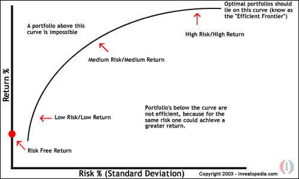

Financial Concepts: Introduction
The world of investing can be a cold, chaotic and confusing place. In this tutorial, we'll go through some of the theories that investors have developed in an effort to explain the behavior of the market. We'll discuss concepts like dollar cost averaging and diversification, which are especially useful for individual investors. We will also plunge into some of the more arcane academic explanations. No matter what your situation is, all of these concepts are important to understand because they help to clarify the inner workings of the mysterious market.
So, without further ado, here are some of the fundamental concepts of finance and investment.
Financial Concepts: The Risk/Return Tradeoff
The risk/return tradeoff could easily be called the "ability-to-sleep-at-night test." While some people can handle the equivalent of financial skydiving without batting an eye, others are terrified to climb the financial ladder without a secure harness. Deciding what amount of risk you can take while remaining comfortable with your investments is very important.
In the investing world, the dictionary definition of risk is the chance that an investment's actual return will be different than expected. Technically, this is measured in statistics by standard deviation. Risk means you have the possibility of losing some, or even all, of our original investment.
Low levels of uncertainty (low risk) are associated with low potential returns. High levels of uncertainty (high risk) are associated with high potential returns. The risk/return tradeoff is the balance between the desire for the lowest possible risk and the highest possible return. This is demonstrated graphically in the chart below. A higher standard deviation means a higher risk and higher possible return.

|
A common misconception is that higher risk equals greater return. The risk/return tradeoff tells us that the higher risk gives us the possibility of higher returns. There are no guarantees. Just as risk means higher potential returns, it also means higher potential losses.
On the lower end of the scale, the risk-free rate of return is represented by the return on U.S. Government Securities because their chance of default is next to nothing. If the risk-free rate is currently 6%, this means, with virtually no risk, we can earn 6% per year on our money.
The common question arises: who wants to earn 6% when index funds average 12% per year over the long run? The answer to this is that even the entire market (represented by the index fund) carries risk. The return on index funds is not 12% every year, but rather -5% one year, 25% the next year, and so on. An investor still faces substantially greater risk and volatility to get an overall return that is higher than a predictable government security. We call this additional return the risk premium, which in this case is 6% (12% - 6%).
Determining what risk level is most appropriate for you isn't an easy question to answer. Risk tolerance differs from person to person. Your decision will depend on your goals, income and personal situation, among other factors.
Financial Concepts: Diversification
Many individual investors can't tolerate the short-term fluctuations in the stock market. Diversifying your portfolio is the best way to smooth out the ride.
Diversification is a risk-management technique that mixes a wide variety of investments within a portfolio in order to minimize the impact that any one security will have on the overall performance of the portfolio. Diversification lowers the risk of your portfolio. Academics have complex formulas to demonstrate how this works, but we can explain it clearly with an example:
Suppose that you live on an island where the entire economy consists of only two companies: one sells umbrellas while the other sells sunscreen. If you invest your entire portfolio in the company that sells umbrellas, you'll have strong performance during the rainy season, but poor performance when it's sunny outside. The reverse occurs with the sunscreen company, the alternative investment; your portfolio will be high performance when the sun is out, but it will tank when the clouds roll in. Chances are you'd rather have constant, steady returns. The solution is to invest 50% in one company and 50% in the other. Because you have diversified your portfolio, you will get decent performance year round instead of having either excellent or terrible performance depending on the season. There are three main practices that can help you ensure the best diversification:
- Spread your portfolio among multiple investment vehicles such as cash, stocks, bonds, mutual funds and perhaps even some real estate.
- Vary the risk in your securities. You're not restricted to choosing only blue chip stocks. In fact, it would be wise to pick investments with varied risk levels; this will ensure that large losses are offset by other areas.
- Vary your securities by industry. This will minimize the impact of industry-specific risks.
Diversification is the most important component in helping you reach your long-range financial goals while minimizing your risk. At the same time, diversification is not an ironclad guarantee against loss. No matter how much diversification you employ, investing involves taking on some risk.
Another question that frequently baffles investors is how many stocks should be bought in order to reach optimal diversification. According to portfolio theorists, adding about 20 securities to your portfolio reduces almost all of the individual security risk involved. This assumes that you buy stocks of different sizes from various industries.
Financial Concepts: Dollar Cost Averaging
If you ask any professional investor what the hardest investment task is, he or she will likely tell you that it is picking bottoms and tops in the market. Trying to time the market is a very tricky strategy. Buying at the absolute low and selling at the peak is nearly impossible in practice. This is why so many professionals preach about dollar cost averaging (DCA).
Although the term might imply a complex concept, DCA is actually a fairly simple and extremely useful technique. Dollar cost averaging is the process of buying, regardless of the share price, a fixed dollar amount of a particular investment on a regular schedule. More shares are purchased when prices are low, and fewer shares are purchased when prices are high. The cost per share over time eventually averages out. This reduces the risk of investing a large amount in a single investment at the wrong time.
Let's analyze this with an example. Suppose you recently got a bonus for your previously unrecognized excellence (just imagine!), and now you have $10,000 to invest. Instead of investing the lump sum into a mutual fund or stock, with DCA, you'd spread the investment out over several months. Investing $2,000 a month for the next five months, "averages" the price over five months. So one month you might buy high, and the next month you might buy more shares because the price is lower, and so on.
This plan is also applicable to the investor who doesn't have that big lump sum at the start, but can invest small amounts regularly. This way you can contribute as little as $25-50 a month to an investment like an index fund. Keep in mind that dollar cost averaging doesn't prevent a loss in a steadily declining market, but it is quite effective in taking advantage of growth over the long term.
Financial Concepts: Asset Allocation
It's no secret that throughout history common stock has outperformed most financial instruments. If an investor plans to have an investment for a long period of time, his or her portfolio should be comprised mostly of stocks. Investors who don't have this kind of time should diversify their portfolios by including investments other than stocks.
For this reason, the concept of asset allocation was developed. Asset allocation is an investment portfolio technique that aims to balance risk and create diversification by dividing assets among major categories such as bonds, stocks, real estate, and cash. Each asset class has different levels of return and risk, so each will behave differently over time. At the same time that one asset is increasing in value, another may be decreasing or not increasing as much.
The underlying principle of asset allocation is that the older a person gets, the less risk he or she should take on. After you retire, you may have to depend on your savings as your only source of income. It follows that you should invest more conservatively because asset preservation is crucial at this time in life.
Determining the proper mix of investments in your portfolio is extremely important. Deciding what percentage of your portfolio you should put into stocks, mutual funds, and low risk instruments like bonds and treasuries isn't simple, particularly for those reaching retirement age. Imagine saving for 30 or more years only to see the stock market decline in the years before your retirement! For many, this is what happened during the bear market of 2000 and 2001. To determine your asset allocation plan, we strongly suggest that you speak to an investment advisor who can customize a plan that is right for you.
Financial Concepts: Random Walk Theory
Random walk theory gained popularity in 1973 when Burton Malkiel wrote "A Random Walk Down Wall Street", a book that is now regarded as an investment classic. Random walk is a stock market theory that states that the past movement or direction of the price of a stock or overall market cannot be used to predict its future movement. Originally examined by Maurice Kendall in 1953, the theory states that stock price fluctuations are independent of each other and have the same probability distribution, but that over a period of time, prices maintain an upward trend.
In short, random walk says that stocks take a random and unpredictable path. The chance of a stock's future price going up is the same as it going down. A follower of random walk believes it is impossible to outperform the market without assuming additional risk. In his book, Malkiel preaches that both technical analysis and fundamental analysis are largely a waste of time and are still unproven in outperforming the markets.
Malkiel constantly states that a long-term buy-and-hold strategy is the best and that individuals should not attempt to time the markets. Attempts based on technical, fundamental, or any other analysis are futile. He backs this up with statistics showing that most mutual funds fail to beat benchmark averages like the S&P 500.
While many still follow the preaching of Malkiel, others believe that the investing landscape is very different than it was when Malkiel wrote his book nearly 30 years ago. Today, everyone has easy and fast access to relevant news and stock quotes. Investing is no longer a game for the privileged. Random walk has never been a popular concept with those on Wall Street, probably because it condemns the concepts on which it is based such as analysis and stock picking.
It's hard to say how much truth there is to this theory; there is evidence that supports both sides of the debate. Our suggestion is to pick up a copy of Malkiel's book and draw your own conclusions.
Financial Concepts: Efficient Market Hypothesis
Efficient market hypothesis (EMH) is an idea partly developed in the 1960s by Eugene Fama. It states that it is impossible to beat the market because prices already incorporate and reflect all relevant information. This is also a highly controversial and often disputed theory. Supporters of this model believe it is pointless to search for undervalued stocks or try to predict trends in the market through fundamental analysis or technical analysis.
Under the efficient market hypothesis, any time you buy and sell securities, you're engaging in a game of chance, not skill. If markets are efficient and current, it means that prices always reflect all information, so there's no way you'll ever be able to buy a stock at a bargain price.
This theory has been met with a lot of opposition, especially from the technical analysts. Their argument against the efficient market theory is that many investors base their expectations on past prices, past earnings, track records and other indicators. Because stock prices are largely based on investor expectation, many believe it only makes sense to believe that past prices influence future prices.
Financial Concepts: The Optimal Portfolio
The optimal portfolio concept falls under the modern portfolio theory. The theory assumes (among other things) that investors fanatically try to minimize risk while striving for the highest return possible. The theory states that investors will act rationally, always making decisions aimed at maximizing their return for their acceptable level of risk.
The optimal portfolio was used in 1952 by Harry Markowitz, and it shows us that it is possible for different portfolios to have varying levels of risk and return. Each investor must decide how much risk they can handle and than allocate (or diversify) their portfolio according to this decision.
The chart below illustrates how the optimal portfolio works. The optimal-risk portfolio is usually determined to be somewhere in the middle of the curve because as you go higher up the curve, you take on proportionately more risk for a lower incremental return. On the other end, low risk/low return portfolios are pointless because you can achieve a similar return by investing in risk-free assets, like government securities.
{kind=link}
You can choose how much volatility you are willing to bear in your portfolio by picking any other point that falls on the efficient frontier. This will give you the maximum return for the amount of risk you wish to accept. Optimizing your portfolio is not something you can calculate in your head. There are computer programs that are dedicated to determining optimal portfolios by estimating hundreds (and sometimes thousands) of different expected returns for each given amount of risk.
Financial Concepts: Capital Asset Pricing Model (CAPM)
Pronounced as though it were spelled "cap-m", this model was originally developed in 1952 by Harry Markowitz and fine-tuned over a decade later by others, including William Sharpe. The capital asset pricing model (CAPM) describes the relationship between risk and expected return, and it serves as a model for the pricing of risky securities.
CAPM says that the expected return of a security or a portfolio equals the rate on a risk-free security plus a risk premium. If this expected return does not meet or beat our required return, the investment should not be undertaken.
The commonly used formula to describe the CAPM relationship is as follows:
| Required (or expected) Return = RF Rate + (Market Return - RF Rate)*Beta |
For example, let's say that the current risk free-rate is 5%, and the S&P 500 is expected to return to 12% next year. You are interested in determining the return that Joe's Oyster Bar Inc (JOB) will have next year. You have determined that its beta value is 1.9. The overall stock market has a beta of 1.0, so JOB's beta of 1.9 tells us that it carries more risk than the overall market; this extra risk means that we should expect a higher potential return than the 12% of the S&P 500. We can calculate this as the following:
| Required (or expected) Return = | 5% + (12% - 5%)*1.9 |
| Required (or expected) Return = | 18.3% |
What CAPM tells us is that Joe's Oyster Bar has a required rate of return of 18.3%. So, if you invest in JOB, you should be getting at least 18.3% return on your investment. If you don't think that JOB will produce those kinds of returns for you, then you should consider investing in a different company.
It is important to remember that high-beta shares usually give the highest returns. Over a long period of time, however, high beta shares are the worst performers during market declines (bear markets). While you might receive high returns from high beta shares, there is no guarantee that the CAPM return is realized.
Financial Concepts: Conclusion
We hope that this has given you some insight into the market and your investment strategies. Let's recap what we've learned in this tutorial:
- The risk/return tradeoff is the balance between the desire for the lowest possible risk and the highest possible return.
- Higher risk equals greater possible return.
- Diversification lowers the risk of your portfolio.
- Dollar cost averaging is a technique by which, regardless of the share price, a fixed dollar amount is invested on a regular schedule.
- Asset allocation divides assets among major categories in order to create diversification and balance the risk.
- Random walk theory says that stocks take a random and unpredictable path.
- Efficient Market Hypothesis (EMH) says it is impossible to beat the market because prices already incorporate and reflect all relevant information.
- The concept of the optimal portfolio attempts to show how rational investors will maximize their returns for the level of risk that is acceptable to them.
- Capital asset pricing model (CAPM) describes the relationship between risk and expected return and serves as a model for the pricing of risky securities.